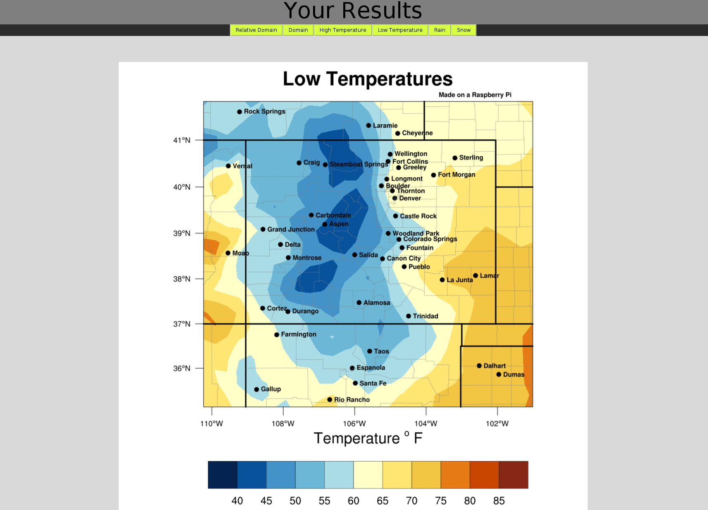

Run WRF on Raspberry Pi¶
Also known as WRF on Pi, the goal of this project is to run a real weather model on your Raspberry Pi and make a weather forecast. You will run the simulation for the days you want, where you want, visualize the output, and make a forecast. By working through this module, you will gain an understanding of how a weather forecast is made, how a meteorologist adds “value” to the forecast, and you will learn some of the limits and shortcomings of some of our latest weather models.
Forecast¶

Overview:¶
Weather is intertwined within nearly all aspects of our lives. It has a large impact on society by affecting our food supply, transportation, and even our health. On an individual level, the weather can affect events like birthday parties, weddings, outdoor concerts, sporting events, and other occasions in our daily lives. In extreme cases, weather can adversely affect both life and property.
Given these impacts, it is very important for us to forecast or predict the future weather. Making a weather forecast isn’t a blind guess, but it is a process of using observations of the current weather to start or initialize a mathematics-based computer model. The model is then used to simulate the weather in the future.
Even though our weather models have been in development since the 1940’s, making an accurate forecast is still very difficult – even for a trained meteorologist. This is because our computer simulations are not perfect. Sometimes they suggest the wrong values for temperature, wind, and precipitation. Therefore, meteorologists use weather models as a guide, and use their expertise to deliver a more accurate forecast.
Goal:¶
The goal of this project is to run a real weather model on your Raspberry Pi and make a weather forecast. You will run the simulation for the days you want, where you want, visualize the output, and make a forecast. By working through this module, you will gain an understanding of how a weather forecast is made, how a meteorologist adds “value” to the forecast, and you will learn some of the limits and shortcomings of some of our latest weather models.
Who this is for:¶
This if for anyone who is interested in running their own weather model or learning how a weather forecast is made. The education module associated with this project is for grades 7-9.
Setup¶
These instructions assume your Raspberry Pi is already up and running.
Section 1. Download and install Docker on your Raspberry Pi¶
The WRF application is run through a program called Docker. It is too complicated for this lesson on how Docker works, but a good description can be found here. Once you have Docker installed onto your computer, it will be very easy to launch the application on your Raspberry Pi.
1.1 Install Docker by opening a terminal and typing¶
curl -sSL https://get.docker.com | sh
1.2 Launch the application by copying and pasting the following command¶
sudo docker run -it --rm --net=host -e DISPLAY -v $HOME/.Xauthority:/root/.Xauthority ncar/pi-wrf
When you enter the following command and execute it, Docker downloads the file for you and then launches it. If you close the program, Docker will save the “file” so you do not have to download it the next time you run the application.
Section 2.¶
Once you have launched the appliction, it is time to run it. The app allows you to configure when you want the model to run and for how long. Follow the steps below to make your first forecast.
2.1 Click the Run Forecast Button.¶
2.2 Select a start and end date, and confirm your selection.¶
2.3 Click and drag the domain you would like to select. The map automatically zooms to your domain. If you accidentally choose a domain that is too small, then you may either zoom out or reset the domain. Once you are done, click the run model tab.¶
2.4 Press the run model button when you are ready to run the model. After the model finishes, a button will appear to view the output. Click it to see the results of the model.¶
Verify Your Results:¶
Websites like these are great for determining the observations of your domain:
How the Model Works¶
Creating a real world forecast is a complicated process. It involves combining observations (from satellites, weather balloons, radars, aircraft, buoys, etc.) and short term forecasts, a process called data assimilation. The end goal of data assimilation is to create the initial conditions for the weather model, which is essentially a snapshot of the atmosphere. The initial conditions tell the weather model what the values are for pressure, temperature, wind, and water vapor throughout the entire atmosphere. Once the initial state of the atmosphere is known, the weather model runs, and physics and mathematics take over as the weather model begins to simulate weather in the future.
- data assimilation¶
The process of combining observations and model forecasts
- domain¶
The area you want to simulate
- grid cells¶
The model divides the domain into a series of squares that resembles a checkers/chess board. These squares are known as grid cells
- resolution¶
The size of the grid cells. Having smaller grid cells allows the model to simulate finer and more detailed features. Therefore small grid cells indicate a higher resolution